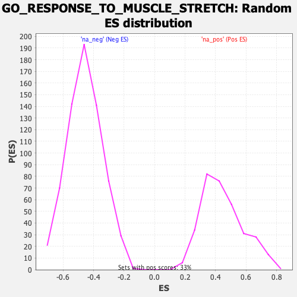

| | | Dataset | DE_genes |
| Phenotype | NoPhenotypeAvailable |
| Upregulated in class | na_neg |
| GeneSet | GO_RESPONSE_TO_MUSCLE_STRETCH |
| Enrichment Score (ES) | -0.8206701 |
| Normalized Enrichment Score (NES) | -1.7947372 |
| Nominal p-value | 0.0 |
| FDR q-value | 0.020794757 |
| FWER p-Value | 0.103 |
Table: GSEA Results Summary
 Fig 1: Enrichment plot: GO_RESPONSE_TO_MUSCLE_STRETCH
Fig 1: Enrichment plot: GO_RESPONSE_TO_MUSCLE_STRETCH
Profile of the Running ES Score & Positions of GeneSet Members on the Rank Ordered List
| PROBE | GENE SYMBOL | GENE_TITLE | RANK IN GENE LIST | RANK METRIC SCORE | RUNNING ES | CORE ENRICHMENT | | 1 | SLC8A1 | | | 603 | 1.458 | 0.0235 | No |
| 2 | NFKB1 | | | 1815 | 0.385 | -0.0384 | No |
| 3 | RYR2 | | | 2304 | 0.243 | -0.0596 | No |
| 4 | NFKBIA | | | 2692 | 0.177 | -0.0770 | No |
| 5 | EDN1 | | | 3846 | 0.079 | -0.1482 | No |
| 6 | MAPK14 | | | 4156 | 0.061 | -0.1656 | No |
| 7 | NPPA | | | 4307 | 0.053 | -0.1731 | No |
| 8 | CAV3 | | | 4662 | 0.034 | -0.1945 | No |
| 9 | RELA | | | 6467 | -0.071 | -0.3082 | No |
| 10 | ANKRD1 | | | 7627 | -0.164 | -0.3762 | No |
| 11 | TTN | | | 8669 | -0.270 | -0.4320 | No |
| 12 | TCAP | | | 9246 | -0.341 | -0.4547 | No |
| 13 | DMD | | | 10135 | -0.468 | -0.4921 | No |
| 14 | SLC9A1 | | | 15214 | -2.702 | -0.7049 | Yes |
| 15 | RAF1 | | | 15370 | -3.364 | -0.5709 | Yes |
| 16 | JUN | | | 15456 | -4.705 | -0.3748 | Yes |
| 17 | FOS | | | 15471 | -8.771 | 0.0000 | Yes |
Table: GSEA details [plain text format]

Fig 2: GO_RESPONSE_TO_MUSCLE_STRETCH: Random ES distribution
Gene set null distribution of ES for GO_RESPONSE_TO_MUSCLE_STRETCH